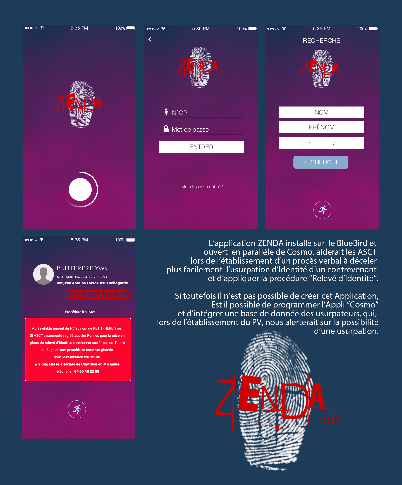

AUDACIEUX PASSIONNÉ CURIEUX CRÉATIF
Depuis un peu plus de Six années passées au sein de la SNCF , j’ai pu acquérir de l’expérience dans mes missions de contrôleur, (Service, Sureté, Sauvegarde des recettes).
J'ai su être force de proposition en réalisant plusieurs documents internes afin de faciliter la vie de mes collègues au sein de ma résidence.
Fiches de reporting pour les Accueils Embarquement et Contrôles de sortie,
Fiches de Recueil d'Identité , Mémo Zones Léman Express...
J’ai toujours eu un goût pronnoncé pour le Design et le Développement digital.
Il y a quelques mois j'ai commencé la création d'une application regroupant les numéros utiles,
les Lignes Léman Express, les lieux de RHR, des idées restaurants et Fastfood ,...
Entre 2006 et 2011 , Président de l'Association APJES TAEKWONDO, mais aussi Photographe et "Webdesigner" , je me lance dans la création de mon premier site web: www.tkd68.com . J'utilise des outils de création de sites en WYSIWYG.
J'ai ensuite créé pour Une Location de Chambres d'Hôtes: www.casarosmarino.ch, S'en est suivi de: www.optiquemorel.com pour mon précédent employeur. Pour finir: www.gospelmessengers.net pour une Chorale.
Je n'ai jamais codé et c'est pourquoi aujourd'hui l'opportunité s'offre à moi d'entrer dans un cursus de Formation Web & Web Mobile pour le poste de Développeur.
Issu du monde de l’Optique Lunetterie, j’ai toujours été soucieux de la Relation Clients.
Il y a quelques temps de cela, j'ai fait une proposition sur Léonard. Une application regroupant toutes déclarations de fausse identité ou fausse adresse. Un appercu de la maquette ICI.
Je vous propose de parcourir mon CV en ligne ainsi que mes motivations. Tout n'est pas parfait, loin de là, mais avec le peu de connaissance et en prenant le temps...
J'ai réalisé ce site grace à quelques tutoriels trouvés sur la toile ainsi que sur Youtube. Merci à https://www.alsacreations.com/ ou https://www.codeur.com
Yannick Niedosik.
EXPERIENCE
Depuis le 21 Janvier 2016 ASCT - Brigade Citi Annemasse Service & Contrôle - Aide gare
2013 à 2015 Monteur Vendeur en Optique Lunetterie - Optique Morel - Monteux (84)
2011 à 2013 Monteur Vendeur en Optique Lunetterie - Jobal Expansion - Habsheim (68)
2008 à 2011 Monteur Vendeur en Optique Lunetterie - Responsable adjoint - Nuffer Opticiens - Habsheim (68)
2005 à 2008 Monteur Vendeur en Optique Lunetterie - Responsable adjoint - Thann - Cernay - St.Louis (68)
2003 à 2005 Serveur Responsable de Salle - Vanille - Chocolat - St.Martin d'Ardèche (07)
1995 à 2003 Monteur Vendeur en Optique Lunetterie - Optique Nageleisen - Bourtzwiller (68)
FORMATIONS DIPLOMES CERTIFICATS
9 Novembre 2021 Certificat Passeport Numérique
Juillet 2020 à Septembre 2020 Langue des Signes Française - e-Linguo
Mai 2020 à Juin 2020 Formation Guichet - Mosaïque - NovaTER
Janvier 2016 à Mai 2016 Formation Agent Service Commercial Train - Assermenté et Agréé
1995 à 1997 CAP/BEP Monteur Vendeur en Optique Lunetterie - UNSOF EPOD Paris
Langues
FRANÇAIS Langue Maternelle
ALLEMAND Scolaire
ANGLAIS Scolaire
LSF
PASSEPORT NUMÉRIQUE

PORTFOLIO
MAQUETTE APPLICATION ZENDA - USURPATION D'IDENTITÉ
ZONES LÉMAN EXPRESS

Idée d'une fresque pour Gare & Connexion en collaboration
avec des Artistes pour l'accueil des voyageurs, Ici en Gare d'Annecy